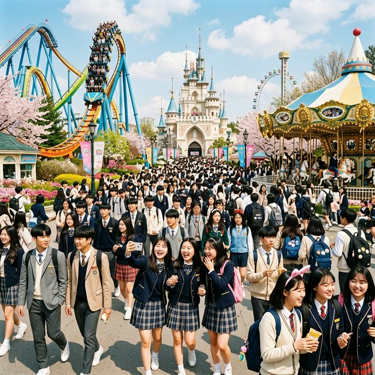
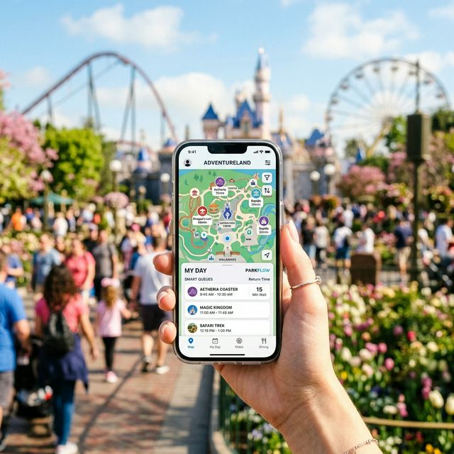
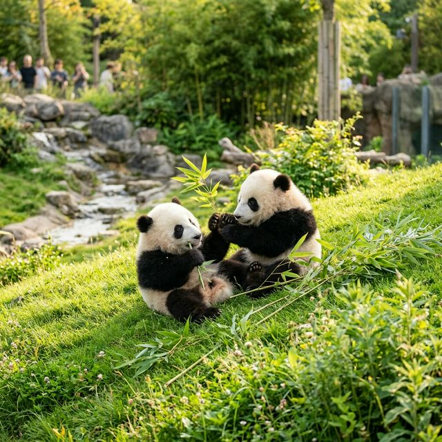

[만우절 특집] 에버랜드 교복 할인 대참사? 스마트 줄서기와 주차 지옥 탈출의 모든 것
매년 4월 1일(만우절)만 되면 경기도 용인 에버랜드 일대는 이른바 '교복 좀비 사태'를 방불케 합니다. 교복만 입고 오면 나이를 불문하고 주어지는 압도적인 티켓 할인
혜택(일반 성인 요금 대비 최대 40~50% 반값 할인)에 2030 대학생과 직장인들마저 옷장 속에 묵혀둔 옛날 교복을 꺼내 입고 좀비 떼처럼 오픈런을 감행하기 때문입니다. 게다가 올해는 벚꽃 만개
시즌과 쌍둥이 판다(푸바오 동생)의 폭발적인 인기까지 겹치면서 역대 최고의 인구가 문을 부수고 들어갈 것으로 예상됩니다. 아무런 데이터나 전략 없이 무작정 4월 1일에 교복만 입고 에버랜드에 갔다간
스마트폰만 쳐다보다 길바닥에서 4시간을 버리게 됩니다. 오늘 제가 분석한 '오픈런 동선부터 스마트 줄서기 필승 전략' 1만 자 가이드만 정독하면 남들이 T익스프레스
대기줄에서 고통받을 때, 당신은 츄러스를 먹으며 3개의 메인 어트랙션을 정복할 수 있습니다.

▲ 매년 4월 1일이면 교복을 입은 성인(?)들로 진풍경이 펼쳐지는 에버랜드. 만우절 반값 할인과 벚꽃 놀이의 설렘이 섞인 축제의 현장입니다. (ratio
1:1)
1. 1분 1초가 갈리는 '교통과 주차장 지옥' 탈출법 (오전 7시의 법칙)
만우절 에버랜드의 첫 번째 어트랙션은 T익스프레스가 아닙니다. 바로 '용인 나들목(IC)부터 에버랜드 정문 주차장까지의 진입 사투'입니다. 주말 수준을 훨씬 뛰어넘는
극성수기 평일 혼잡도를 기록하기 때문에, 마음 편히 9시에 도착할 생각이라면 차라리 대중교통(에버라인)을 타는 것을 권장합니다.
🚘 주차장 공략 핵심 3원칙
- 무료 외곽 주차장(1~3주차장) 활용: 셔틀버스를 5분 더 타더라도, 정문 유료 주차장에 차를 대려고 1시간 동안 도로에서 정체하는 멍청한 짓은 절대
금물입니다.
- 정문 MA 유료 주차장은 무조건 자정 예약: 에버랜드 앱을 통해 전날 밤 00시에 열리는 발레파킹(대리주차)을 예약하면, 줄 서지 않고 바로 정문에 차를
던지고 뛸 수 있는 최고의 마패를 얻게 됩니다.
- 목표 도착 시간은 무조건 "오전 8시": 4월 1일은 10시 정각 입장이 무의미합니다. 정문 티켓 부스 앞 대기열 맨 앞줄을 차지하기 위해 최소 2시간 전인
오전 8시까지는 돗자리를 펴고 진을 쳐야 첫 번째 스마트 줄서기에 성공할 수 있습니다.
2. 티켓 스캔 직후 3초가 하루를 결정한다: '스마트 줄서기' 타겟팅
정문을 통과하고 웰컴 티켓을 폰으로 스캔한 직후, 절대 우물쭈물 걷거나 사진을 찌고 있어서는 안 됩니다. 즉시 에버랜드 스마트폰 앱을 켜고 이번 만우절 나들이의 가장 큰 핵심 목적에 따라
단 1개의 메인 타겟을 눌러 '스마트 줄서기(Virtual Queue)'를 확보해야 합니다.

▲ 에버랜드 정문을 통과하자마자 가장 먼저 해야 하는 앱 조작 화면. 당신의 손가락 스피드(광클)가 180분의 지옥 대기를 10분으로 줄여줍니다.
(ratio 1:1)
취향별 스마트 줄서기 (A/B 플랜) 매뉴얼
| 당신의 구성 유형 |
1순위 광클 스마트 줄서기 |
예약 직후 달려갈 현장 오프라인 대기 줄 |
| 교복 입은 인스타 감성 커플 |
T 익스프레스 (T-Express) |
스마트 예약 후 여유롭게 매직트리 벚꽃 인증샷 + 범퍼카 현장 줄서기 |
| 동물 덕후 & 푸바오 팬 2030 |
판다월드 (Panda World) |
예약 완료 후 사파리 월드(호랑이/사자) 현장 줄서기 우선 공략 |
| 액티비티 몰빵 대학생/고딩 무리 |
로스트밸리 (육식동물 버스) |
더블락스핀(어지럼증) 혹은 썬더폴스 물맞기 기구 오프라인 줄서기 돌진 |
기억하십시오. 4월 1일 대목에는 판다월드와 로스트밸리 스마트 줄서기가 입장 시작 후 불과 3분 만에 마감(예약 마감)되는 촌극이 매년 벌어집니다. 일행 중 한 명의
폰으로 입장권을 모두 모아 그룹을 형성해 둔 뒤, 대표 한 명이 폭풍 클릭을 전담하는 체제가 절대적으로 유리합니다.
3. 관전 포인트: 영원한 에버랜드의 슈퍼스타 '쌍둥이 판다' 루이바오 & 후이바오
4월 에버랜드를 방문하는 데 빠질 수 없는 즐거움, 바로 이별한 맏언니 푸바오의 빈자리를 완벽하게 메우고 있는 루이바오와 후이바오(쌍둥이 자매)입니다. 이제 장난기가
절정에 달하며 서로 나무 위에서 격투기(?)를 벌이거나 데굴데굴 구르는 만화 같은 모습 때문에 어트랙션보다 판다월드 관람을 우선순위로 두는 인파가 압도적으로 많습니다. 바스락거리는 대나무 식사
ASMR과 솜뭉치 같은 쌍둥이 판다들을 직접 보기 위한 눈치 게임은, T익스프레스의 공포를 능가하는 가장 치열한 에버랜드의 킬러 콘텐츠가 되었습니다.

▲ 교복 입은 좀비(?)들이 롤러코스터 대신 동물원으로 달려가게 만드는 주범. 극강의 귀여움으로 무장한 루이바오와 후이바오 자매의 노는 모습입니다.
(ratio 1:1)
4. 대참사 방지 요약: 만우절 에버랜드, 이렇게만 안 하면 성공한다
아무리 계획을 잘 세웠어도, 체력 안배와 동선 꼬임 방지를 간과하면 피곤한 만우절 나들이로 끝날 수 있습니다. 특히 교복이라는 얇은 의상 특성상 오후 6시가 넘어가며 해가
지고 산바람이 불어치면 극한의 추위가 몰려옵니다. 백팩이나 에코백에 반드시 경량 패딩 혹은 핫팩을 챙겨가는 것은 선택이 아닌 생존의 필수 조건입니다.
또한 오후 2시쯤 되면 모든 스마트 줄서기가 끝나고 100% 현장 대기(길바닥 대기) 모드로 전환됩니다. 이때 무리하게 150분 대기를 뚫기보다는, '아마존 익스프레스' 옆 츄러스
맛집이나 장미원 인근의 피크닉 벤치에서 커피를 마시며 오후의 벚꽃 정취를 즐기는 것이, 체력을 갉아먹는 줄서기보다 훨씬 더 큰 포만감을 주는 '어른들의 진짜
테마파크 하우투'입니다.
4월 1일 단 하루, 뻔뻔하게 교복을 입고 만우절의 축제를 만끽하십시오! 하지만 아무런 전략 없는 뻔뻔함은 무릎 관절의 슬픔만 남길 뿐입니다. 오늘 제가 짚어드린 스마트 줄서기 타겟팅과
예약 폭격 동선을 머릿속에 완전히 숙지하고, 잊을 수 없는 찬란한 2026년 봄날의 레트로 테크노 교복 파티를 완성하시기 바랍니다. 🎢
데이터 출처: 에버랜드 공식 앱(Everland) 대기시간 빅데이터 시뮬레이터
#에버랜드만우절
#교복반값할인
#에버랜드오픈런
#스마트줄서기
#T익스프레스
#푸바오동생쌍둥이판다
#루이바오후이바오
#에버랜드주차장꿀팁
#발레파킹예약
#에버랜드주말